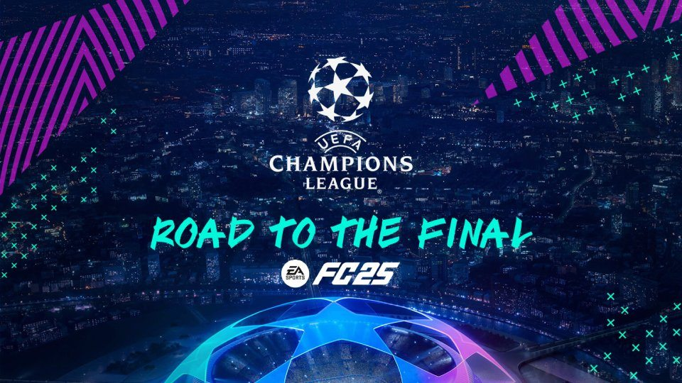
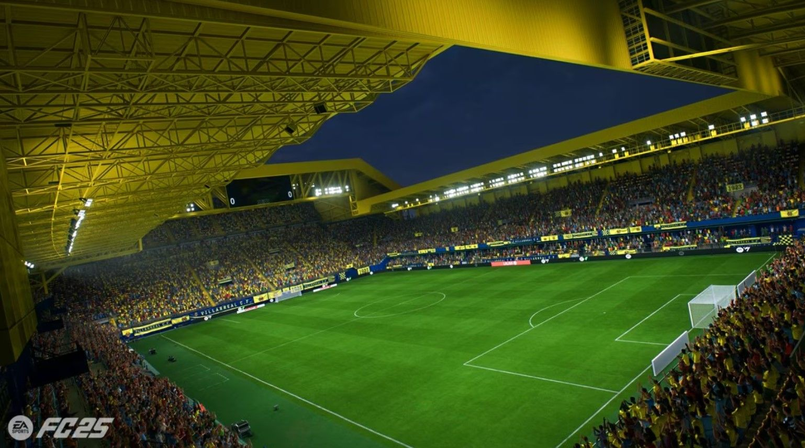
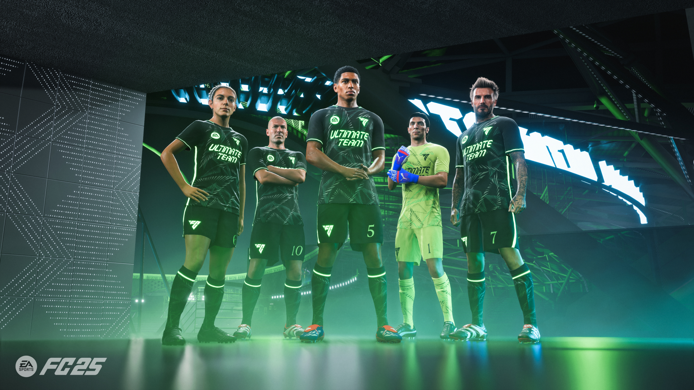
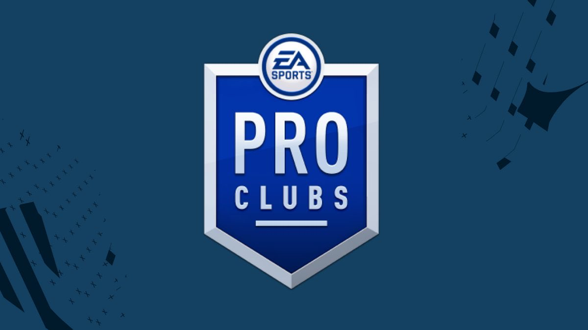
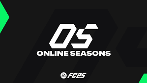

Gioca come allenatore o calciatore professionista e guida la tua squadra o il tuo personaggio verso la gloria. Include trasferimenti, allenamenti, obiettivi stagionali e crescita dei giovani.

Partecipa a campionati reali o crea tornei personalizzati. Include competizioni ufficiali come la Champions League, Europa League, coppe nazionali e la Coppa del Mondo (quando presente).

Partita veloce tra due squadre, con regole classiche o personalizzate. Perfetto per sfide tra amici o partite casuali.

Costruisci la tua squadra dei sogni collezionando giocatori, completando sfide e competendo online e offline.
Modalità ricca e in continua evoluzione.
- Division rivals: Partite online classificate settimanali, con ricompense in base al piazzamento.
- Fut Champions: Competizione online ad accesso limitato, con premi speciali in base alle vittorie.
- Squad Battles: Sfide contro squadre controllate dall'IA, con difficolt` selezionabile e premi settimanali.
- Draft Online/Offline: Crea una squadra casuale e prova a vincere 4 partite consecutive per ottenere grandi premi.
- Amichevoli Fut: Partite senza pressione o classifica, anche con regole speciali (niente regole, golden gol, ecc.).

Calcio di strada in piccoli campi con regole freestyle. Include partite online e personalizzazione del proprio giocatore.

Modalità online dove ogni giocatore controlla un singolo calciatore. Crea o unisciti a un club, gioca con amici in squadra e scala le divisione.
